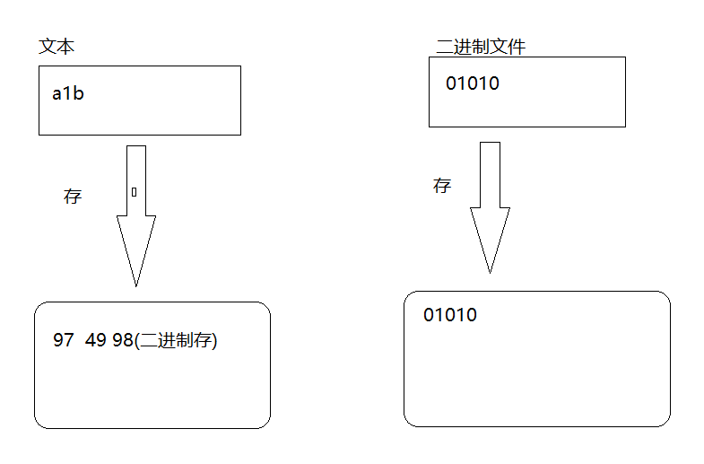

1 文件
文本文件 : 存储时,是将字符的ascii值存在磁盘中,取的时候将数值(ascii)翻译成对应的字符
二进制文件: 存的是二进制,取的是二进制

2 文件指针

3 打开文件
FILE *fp = fopen( "pathname", 打开的方式 );
注意: 打开的选项
只有带r的选项,如果文件不存在,则不创建文件
带w选项的,打开时会清空文件
fopen的返回值: 如果成功返回FILE结构体地址,失败返回NULL
返回的文件流指针标识了打开的那个文件
r或rb | 以只读方式打开一个文本文件（不创建文件，若文件不存在则报错） |
w或wb | 以写方式打开文件(如果文件存在则清空文件，文件不存在则创建一个文件) |
a或ab | 以追加方式打开文件，在末尾添加内容，若文件不存在则创建文件 |
r+或rb+ | 以可读、可写的方式打开文件(不创建新文件) |
w+或wb+ | 以可读、可写的方式打开文件(如果文件存在则清空文件，文件不存在则创建一个文件) |
a+或ab+ | 以添加方式打开文件，打开文件并在末尾更改文件,若文件不存在则创建文件 |
//r 只读 ,如果文件不存在,不创建
//w 只写 清空文件 ,如果文件不存在,创建文件
//r+ 可读可写 如果文件不存在,不创建
//w+ 可读可写清空文件, 如果文件不存在,创建文件
//a追加 如果文件不存在,会创建文件
//b 二进制文件
//打开一个文件,成功返回FILE结构体地址,失败返回NULL
FILE *fp = fopen("./a.txt","w");
if (NULL == fp)
{
perror("open");
return;
}
4 fclose
fclose(FILE *fp);
功能: 关闭文件
参数: 文件流指针
5 vs中. 当前./相对路径问题
1 如果直接在vs中调试运行: 相对路径相对的是工程文件

2 如果手动运行,.exe文件.相对路径相对的是可执行文件
6 设备文件
stdin
stdout
stderr

7 fputc
功能: 写入一个字符到文件中
#include <stdio.h>
int fputc(int ch, FILE * stream);
功能：将ch转换为unsigned char后写入stream指定的文件中
参数：
ch：需要写入文件的字符
stream：文件指针
返回值：
成功：成功写入文件的字符
失败：返回-1
FILE *fp = fopen("./a.txt","w");
if (NULL == fp)
{
perror("open");
return;
}
char buf[] = "hello";
int i = 0;
while (buf[i] != 0)
{
fputc(buf[i],fp);
i++;
}
8 fgetc
#include <stdio.h>
int fgetc(FILE * stream);
功能：从stream指定的文件中读取一个字符
参数：
stream：文件指针
返回值：
成功：返回读取到的字符
失败：-1
9 feof
如果读取文件不是纯文本,有像-1这种数字,那么就不可以使用EOF(-1)作为文件的结尾
#include <stdio.h>
int feof(FILE * stream);
功能：检测是否读取到了文件结尾。判断的是最后一次“读操作的内容”，不是当前位置内容(上一个内容)。
参数：
stream：文件指针
返回值：
非0值：已经到文件结尾
0：没有到文件结尾
10 fgets 从文件读取字符串
注意: fgets读取遇到\n结束
#include <stdio.h>
char * fgets(char * str, int size, FILE * stream);
功能：从stream指定的文件内读入字符，保存到str所指定的内存空间，直到出现换行字符、读到文件结尾或是已读了size - 1个字符为止，最后会自动加上字符 '\0' 作为字符串结束。
参数：
str：字符串
size：指定最大读取字符串的长度（size - 1）
stream：文件指针
返回值：
成功：成功读取的字符串
读到文件尾或出错： NULL
11 fputs 向文件写入字符串
#include <stdio.h>
int fputs(const char * str, FILE * stream);
功能：将str所指定的字符串写入到stream指定的文件中，字符串结束符 '\0' 不写入文件。
参数：
str：字符串
stream：文件指针
返回值：
成功：0
失败：-1